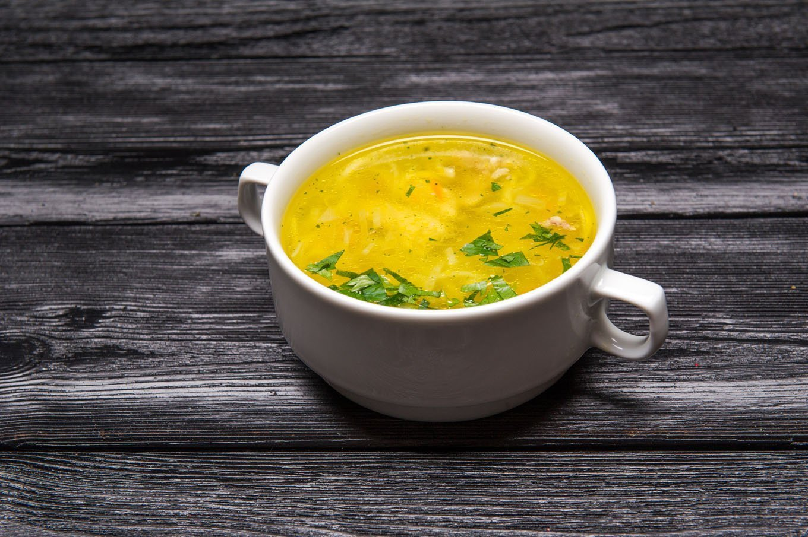

Cooking Store

Ингридиенты
1. вода - 2,5-3 л
2. курица (голени, бедра, крылья и другие части курицы) - 600-700 г.
3. лук репчатый (для бульона) - 1 шт.
4. картофель - 3-5 шт.
5. морковь - 1 шт.
6. тонкая вермишель паутинка, звездочки и т.д. - 3 ст.л.
7. сливочное масло - 1-2 ч.л.
8. укроп - по вкусу.
9. соль - по вкусу.
10. свежемолотый перец - по вкусу
Процесс приготовления
Посмотрите обучабщее видео или
следуйте инструкции ниже
Рецепт
1. Курицу вымыть, положить в кастрюлю, залить холодной водой и довести до кипения.
2. Уменьшить огонь, шумовкой снять пену.
3. Положить очищенную целую луковицу, и варить при слабом кипении 40-50 минут. За 15 минут до готовности, посолить бульон.
4. Курицу вынуть из бульона.
5. Бульон можно процедить через сито.
6. Картофель нарезать маленькими кубиками или соломкой, положить в бульон и варить 10-15 минут с момента закипания.
7. В сковороде растопить кусочек сливочного масла, добавить нарезанную кубиками морковь и обжарить 1-2 минуты на среднем огне.
8. Добавляем в суп морковь.
9. У курицы отделить мясо от костей и нарезать соломкой.
10. Кладем в кастрюлю нарезанное куриное мясо, либо целые голени (бедра или крылышки).
11. Добавляем в суп тонкую вермишель паутинку или другие мелкие макароны, например, звездочки.
12. Кладем укроп, выключаем огонь и даем настояться под крышкой 10 минут, за это время вермишель дойдет до готовности и не разварится в супе.
13. Пробуем суп, солим и перчим по вкусу.